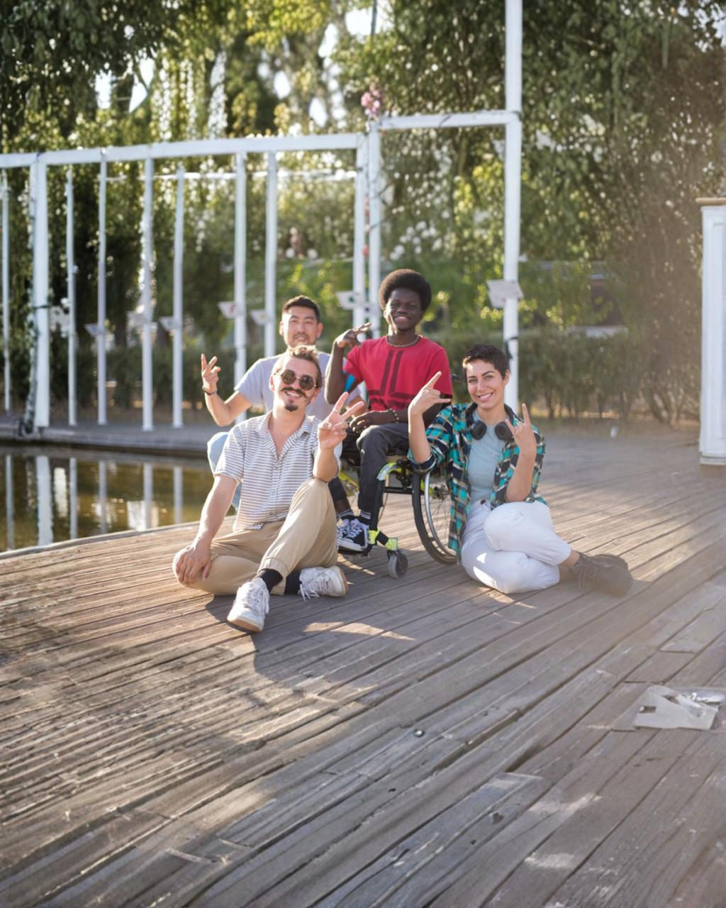

Cada contribuição representa uma oportunidade de devolver autonomia, conforto e esperança a pessoas que enfrentam dificuldades físicas e financeiras.
Seja uma Empresa ParceiraO Rotary Club Bom Despacho Arraial desenvolve há vários anos o Banco de Materiais Ortopédicos, um projeto social que disponibiliza gratuitamente cadeiras de rodas, cadeiras de banho, muletas, camas hospitalares e outros equipamentos para pessoas em situação de vulnerabilidade social, idosos e pacientes em recuperação.
Ao longo dos anos, centenas de famílias foram beneficiadas por essa iniciativa, que proporciona dignidade, mobilidade e melhor qualidade de vida àqueles que mais necessitam.
Entretanto, a crescente demanda da comunidade tornou necessária a ampliação do nosso acervo.

Para continuar a atender as famílias de Bom Despacho sem interrupções, precisamos atingir a meta de arrecadação para adquirir os seguintes equipamentos:
Cadeiras de Rodas
Cadeiras de Banho
Camas Hospitalares
Diante dessa realidade, convidamos a sua empresa a tornar-se parceira deste importante projeto social.
Sua colaboração poderá ser realizada por meio de recursos financeiros, doação de equipamentos ortopédicos novos ou apoio às campanhas de arrecadação.
Como forma de reconhecimento, a empresa parceira poderá ter sua marca divulgada em nossas ações, redes sociais, eventos e materiais institucionais.
Demonstre o seu compromisso com a responsabilidade social e o desenvolvimento da nossa comunidade.
